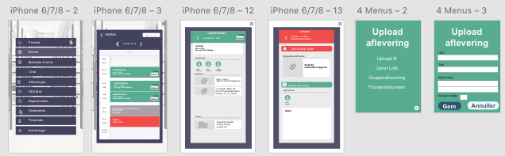

UX
Spændende og relevant opgave. Et redesign af KEA multimedies eget intranet: Fronter.Her vil jeg fremhæve bekendtskabet med AdobeXD. ELSKER DET PROGRAM! At kunne fremstille en prototype og teste den, før det 'real action' går i gang.
Men også i dette tema blev jeg gladeligt udvidet i mit kendskab til tests - her var tænke højt filmet med OBS en ny spændende metode for mig.
Her mine 3 deltagere - og en af de 5 opgaver, der blev sat på.

Ikke overraskende var resultatet, at de fandt nuværende fronter fuldstændig håbløs. Især pegede alle på, at menuerne og knapperne på forsiden, var ganske irrelevante, hvor de mente, at man up front skulle have adgang til, hvad der var mest vigtigt - og derefter kunne ligge andet inf. i menuerne.
Jeg valgte at bruge de samme 3(4)testpersoner i alle mine test, fordi det syntes relevant, at bruge nogen der som udgangspunkt var skeptiske, fordi de startede med test af nuværende fronter.
Adobe XD
Som nævnt: Love it!Jeg vil næsten udnævne det til allermest brugbare redskab, når man fremadrettet skal tale med kunder. Så godt at det næsten kan være problematisk, at fastholde, at dette er en prototype! Men genialt til at afdække 'stierne' - og bruge det som map til det færdige produkt.
Min knap
Inspireret af testene på Fronter, lavede jeg en app jeg kaldte 'Min Knap', for at gøre det så simpelt som overhovedet muligt. Da vi senere kom i grupper, var mit sølle bidrag skemadelen.
Der så blev samlet med de andres bidrag og lynhurtigt kodet ind.
Ugen efter var jeg ikke tilstede, da opgaven blev formuleret, og da det ikke fremgik af slides i oversigten - arbejde jeg istedet på, at samle min oprindelige ide, med de ideer der var lanceret og testet i gruppen og på forum.